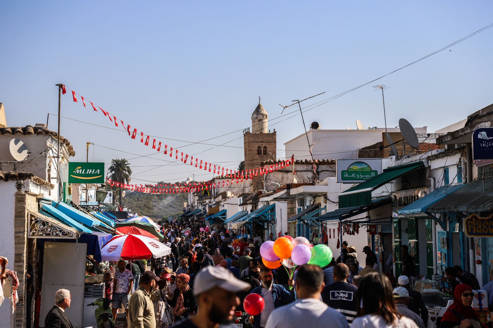
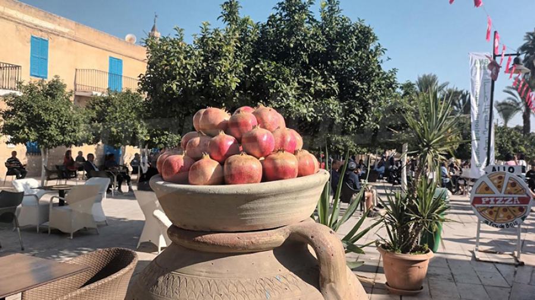
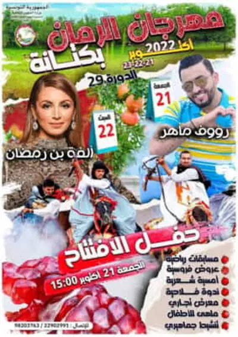
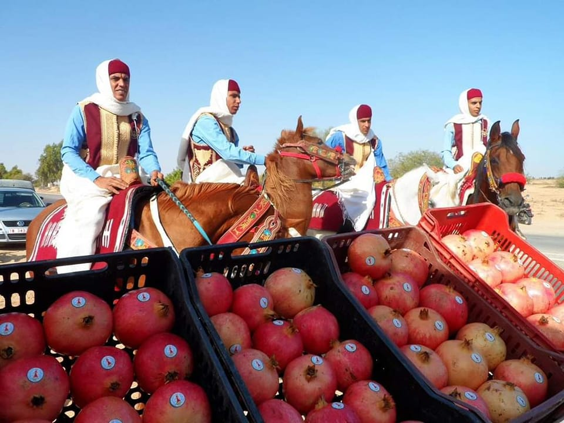

Les Festivals
Festival à Testour
|  |  |
À Testour, où sa popularité grandit, la grenade est mise à l'honneur lors du 7e festival organisé par l'Association de la sauvegarde de la ville de Testour, en collaboration avec l'UTAP et le CRDA, du 2 au 5 novembre 2023. Le festival vise à renforcer l'identité de la région, promouvoir les variétés locales de grenades, sensibiliser à la préservation du patrimoine, et offrir des animations variées allant de la musique à la gastronomie. Une expérience artistique, des visites de vergers, des dégustations de pâtisseries andalouses, et des soirées musicales diversifiées font de cet événement un moment culturel, coloré et convivial. - calendrier.tunisie.co
Festival à Gabes (Kattana)
|  |  |
programmation du festival s'est diversifiée, proposant des spectacles équestres, des soirées poétiques, des compétitions sportives, ainsi qu'une conférence agricole, en plus d'une aire de jeux pour enfants et d'un salon commercial. Les concerts ont également eu leur part, avec une performance animée de l'artiste Raouf Maher, originaire de Medenine.
Il est à noter que le festival a constitué une opportunité pour stimuler l'activité économique régionale, notamment en raison de la variété des produits fabriqués localement exposés. Le Festival de la Grenade à Kattana demeure le seul moyen récréatif pour les habitants, surtout en l'absence de toute installation de divertissement public ou privé. Le comité d'organisation espère augmenter le budget du festival, que ce soit par des contributions de la communauté locale ou des autorités régionales, afin d'améliorer la programmation des éditions à venir. - kapitalis.com